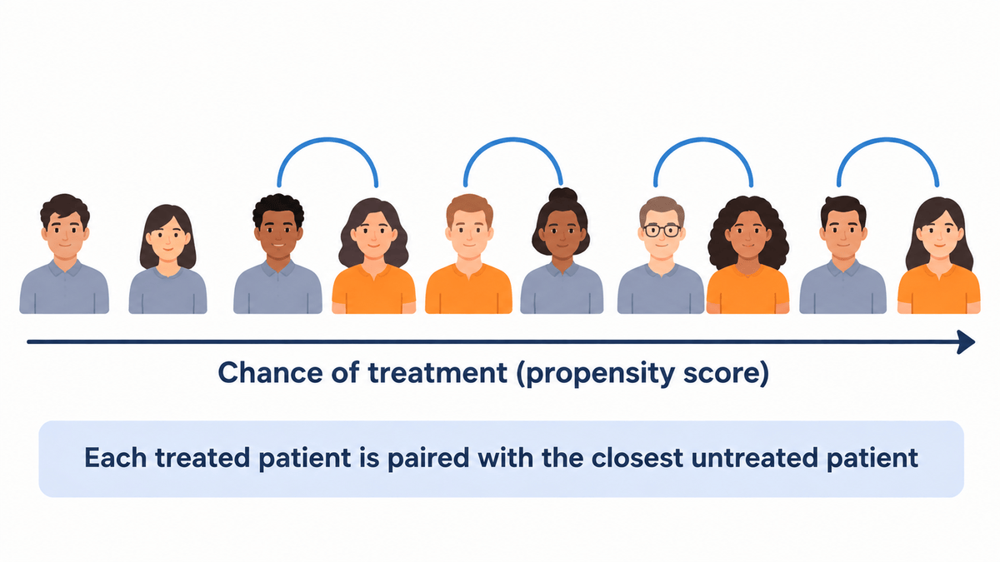
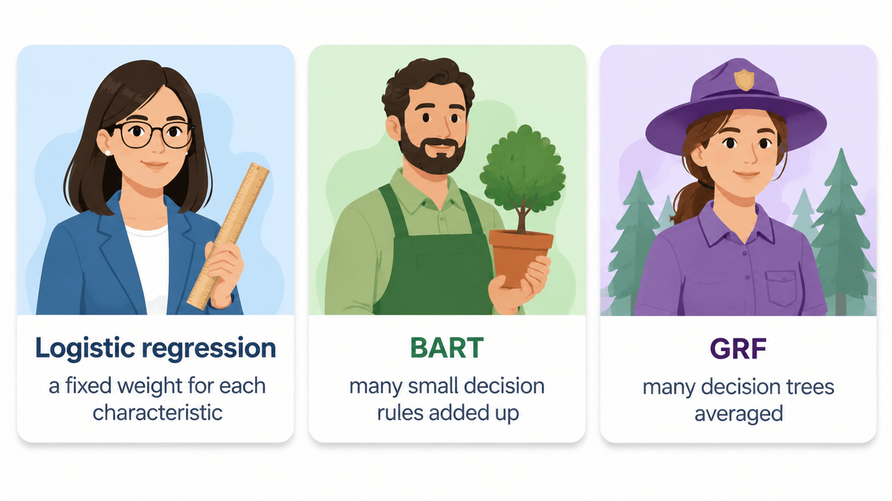
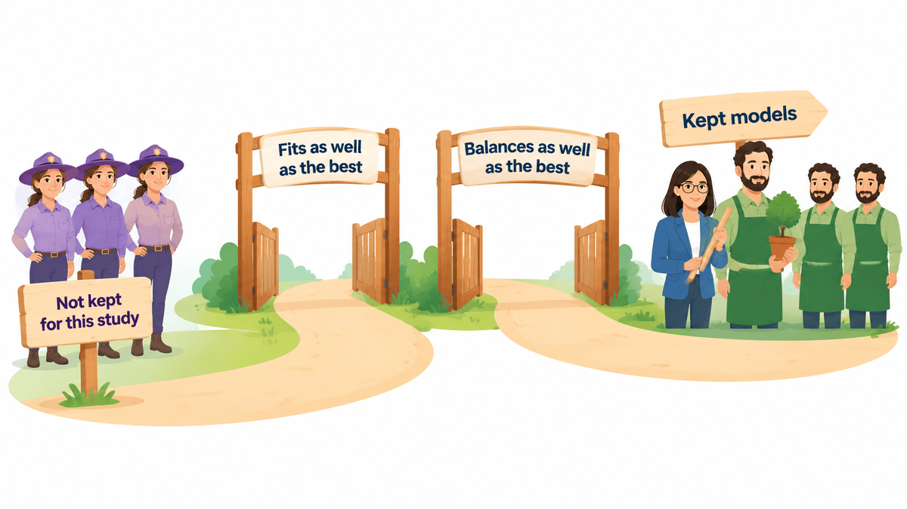
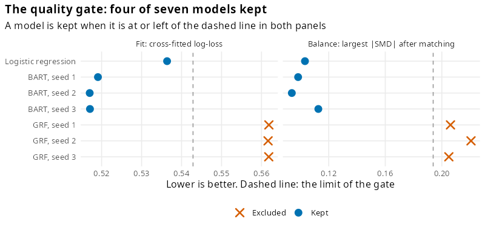
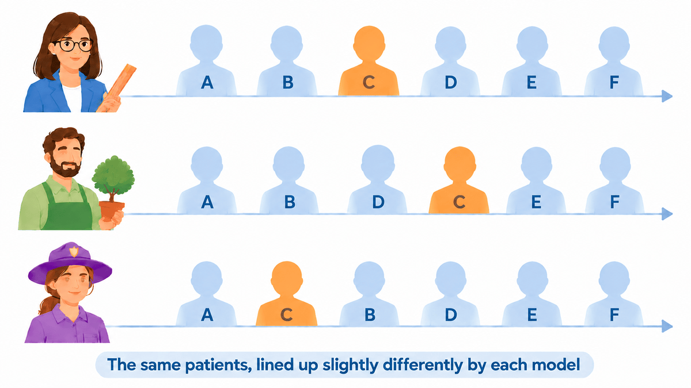
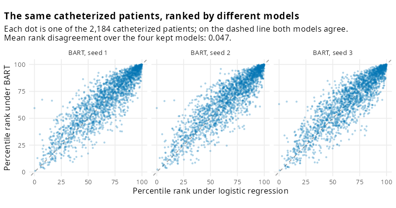
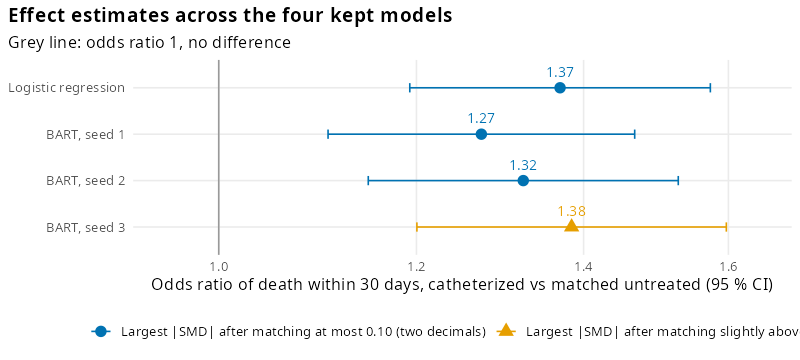

This article explains the method behind propsens one idea at a time. Each idea has a short definition, a concrete example and the numbers of one real study. For the short version, see propsens at a glance.
The example study. Right heart catheterization measures pressures in the heart and lungs of critically ill patients. A landmark observational study (Connors et al., JAMA 1996) compared patients who were catheterized within 24 hours of admission with patients who were not. Its public data have 5,735 patients, 2,184 of them catheterized (the treated patients), with 50 characteristics recorded at admission: diagnosis, age, coexisting illnesses, vital signs, laboratory values and more. The outcome is death within 30 days.
1. Propensity score and matching
A propensity score is one number per patient: the chance, given everything recorded at admission, that this patient receives the treatment. Two patients with similar scores looked equally likely to be catheterized on arrival, even if only one of them was.
Matching uses the score to build a fair comparison. Each treated patient is paired with an untreated patient whose score is close, the treated patient’s matched partner. If the two matched groups look alike at admission, a difference in their outcomes is less likely to reflect how ill they were to begin with.

The score is not observed; it has to be estimated with a statistical model, the propensity model. propsens fits several propensity models. Each model is then used to match the patients with the same matching settings the researcher chose for the original study: 1:1 nearest-neighbour matching without replacement, with a caliper (a maximum allowed distance between partners) of 0.2 standard deviations of the score. Only the propensity model changes; everything else stays the same.
In the example, each matched design kept between 78 % and 82 % of the catheterized patients; the others had no untreated patient within the caliper.
2. The three kinds of model

- Logistic regression gives each characteristic a fixed weight and adds them up. It is the usual choice in published matched studies.
- BART (Bayesian additive regression trees) adds up many small decision rules, such as “age above 70 and low blood pressure”. It picks up combinations of characteristics on its own.
- GRF (a generalized random forest) grows many decision trees, each on a random part of the data, and averages their answers.
Seeds. BART and GRF use randomness while they are fitted, so propsens runs each of them three times with different random starts (seeds). With logistic regression this gives seven models. Every score is cross-fitted: the patients are split into five groups, and each patient’s score comes from a model fitted on the other four, so no model is judged on patients it has already seen.
Why equally good models can still disagree. Think of two experienced clinicians who triage equally well overall: they agree on most patients, yet they do not rank every patient in the same place. Propensity models behave the same way. Two models can predict treatment equally well and still place an individual patient a little higher or lower. In matching, a small change in position can mean a different partner.
3. The quality gate
A model that fits the data poorly will disagree with the others for an uninteresting reason: it is less accurate. Only disagreement among models a careful researcher would accept tells us something about the design. So before anything is measured, each of the seven models must pass two checks, the quality gate.

Check 1: fit. Fit is measured with the log-loss, a penalty for each patient that depends on the chance the model gave to what actually happened. A catheterized patient who was given a 90 % chance of catheterization gets a small penalty (0.11); one who was given a 10 % chance gets a large penalty (2.30). The log-loss is the average penalty over all patients; lower is better. It is like the c-statistic, but it also checks whether the predicted chances are right in size, not only whether they put patients in the right order. A model passes if its log-loss is at most 5 % above the best model’s.
In the example, the best log-loss was 0.517 (BART), so the limit was about 0.543. Logistic regression had 0.536 (3.7 % higher) and passed. The three GRF fits had 0.562 (8.7 % higher) and failed.
Check 2: balance. The standardized mean difference (SMD) of a characteristic is the difference between the averages of the two matched groups, divided by the spread of that characteristic; 0.10 or less is commonly accepted as good balance. For each model, propsens takes the largest SMD over all characteristics after matching. A model passes if this value is at most 0.10 above the best model’s, and never above 0.25.
In the example, the best value was 0.094, so the limit was 0.194. Logistic regression and the three BART fits reached 0.094 to 0.113 and passed; the three GRF fits reached 0.205 to 0.221 and failed.
Result: 4 of 7 models were kept, logistic regression and the three BART fits. These are the “equally good” models whose disagreement is measured next.

| Model | Log-loss | Largest SMD after matching | Treated patients kept | Kept |
|---|---|---|---|---|
| Logistic regression | 0.536 | 0.103 | 82 % | yes |
| BART, seed 1 | 0.519 | 0.098 | 79 % | yes |
| BART, seed 2 | 0.517 | 0.094 | 78 % | yes |
| BART, seed 3 | 0.517 | 0.113 | 79 % | yes |
| GRF, seed 1 | 0.562 | 0.206 | 80 % | no |
| GRF, seed 2 | 0.562 | 0.221 | 81 % | no |
| GRF, seed 3 | 0.562 | 0.205 | 81 % | no |
When fewer than two models pass, there is nothing to compare. propsens then uses all seven models and its output opens with a warning: the diagnostic is outside the setting in which it was evaluated, and the numbers should be read with that in mind. This did not happen in the example.
4. All three excluded models are GRF. Is GRF a poor method?
Not in general. The three GRF fits are the same method with different random starts, so they usually pass or fail together. The gate judges each study on its own data, and in other data GRF may fit best. In the datasets used to evaluate the method, at least one GRF fit passed the gate in 790 of 800 benchmark datasets built on real patient characteristics (ACIC 2016) and in 105 of 300 simulated datasets.
5. Rank disagreement and pair instability
A patient’s percentile rank is their place in the line-up of all patients ordered by the propensity score, from 0 (lowest chance of treatment) to 100 (highest). Matching pairs patients who stand close together in this line-up, so the order is what decides who is paired with whom.

Each model lines up the same patients. Here patient C moves one place with BART and one place the other way with GRF. Rank disagreement measures how much such positions move, on average across the treated patients: for each treated patient it takes the spread (standard deviation) of their percentile rank across the kept models, and then averages over the treated patients. 0 would mean every kept model puts every patient in the same place.
In the example, rank disagreement was 0.047: a typical catheterized patient’s place in the line-up moved by about 5 percentile points across the four kept models. The figure shows the real line-ups.

Pair instability looks at the partners directly: it measures how often the kept models choose different untreated partners for the same treated patient. For each treated patient, propsens finds the partner chosen most often and the share of kept models that chose it; pair instability is 1 minus the average of that share. With four kept models it lies between 0 (all four always agree) and 0.75 (all four always choose differently).
In the example, pair instability was 0.64: on average, a catheterized patient’s most common partner was chosen by only about a third of the kept models. Of the 1,249 catheterized patients matched by all four kept models, every one had at least two different partners. The figure follows one typical patient.

propsens also reports the bootstrap rank instability of the logistic model: how much the ranks move when the same logistic model is refitted on resampled copies of the data. It describes the sampling noise of one model rather than the choice between models, and it is reported alongside rank disagreement. In the example it was 0.051.
6. Effect estimates across the kept models
propsens never uses the outcome. Only to show what the disagreement means in practice, the effect can be estimated with each kept model’s matched pairs. The result is an odds ratio: how the odds of death within 30 days compare between catheterized patients and their untreated partners. An odds ratio of 1 means no difference; the 95 % confidence interval is the range of values compatible with the data.

All four kept models point the same way. The odds ratio was 1.37 (95 % CI 1.19 to 1.57) with logistic regression, and 1.27, 1.32 and 1.38 with the three BART models. The direction of the association (higher odds of death after catheterization) does not depend on the model, but the size of the estimate moves by about a tenth from one equally good model to another.
The third BART model’s balance after matching (largest SMD 0.113) is slightly above the 0.10 level often used to accept a matched design, so the manuscript’s effect table lists three of the four.
How the numbers were produced
The seven models take about 16 minutes on one core, so this article
shows the code without running it. The full script, which also draws the
figures, is data-raw/heart_catheterization_example.R in the
package’s source repository. The characteristics and the treatment come
from ATbounds::RHC; the outcome, death within 30 days, is
read from the public raw file of the Vanderbilt Department of
Biostatistics (https://hbiostat.org/data/repo/rhc.csv) after its
checksum is checked. No patient-level data are stored in propsens.
library(propsens)
# `cohort`: ATbounds::RHC with its dummy columns turned back into the 50 admission
# characteristics (see data-raw/heart_catheterization_example.R); `swang1` = catheterized.
formula <- reformulate(setdiff(names(cohort), "swang1"), response = "swang1")
result <- propensity_sensitivity(formula, data = cohort, replace = FALSE, caliper = 0.2,
cores = 1, seed = 1)
result # the gate, rank disagreement, pair instability
summary(result) # every model's fit and balanceThe odds ratios are conditional odds ratios for 1:1 matched pairs:
the number of pairs in which only the catheterized patient died, divided
by the number in which only the untreated partner died, with a Wald
interval on the log scale. The exact definitions of every diagnostic are
in vignette("definitions", package = "propsens").